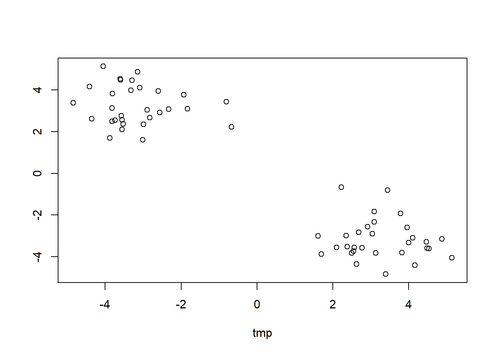
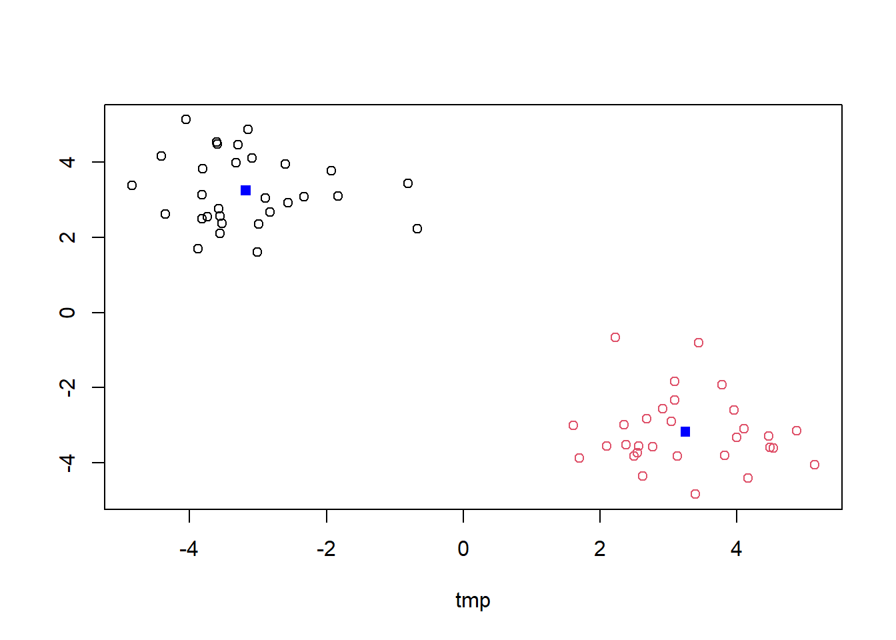
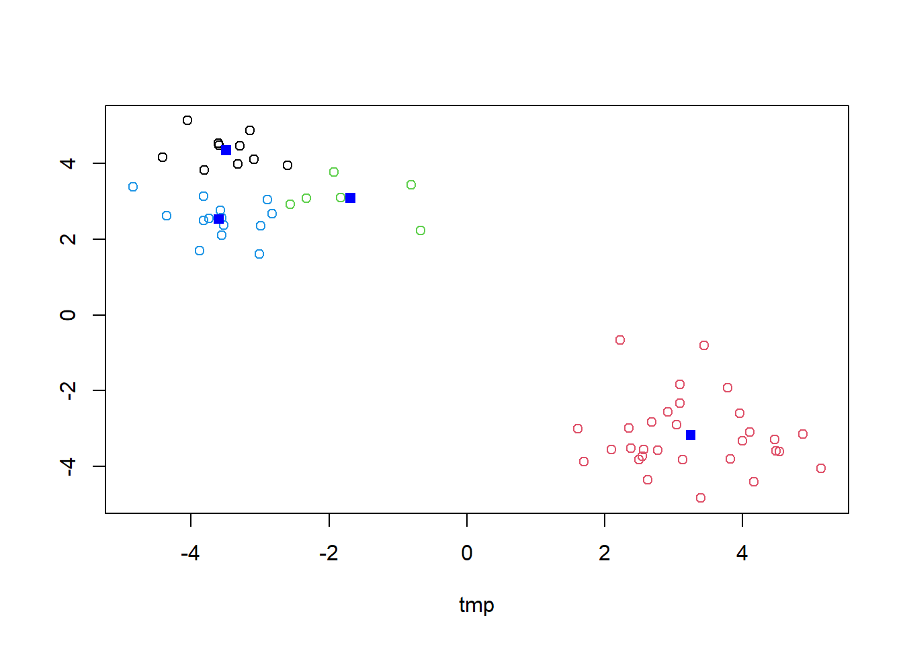
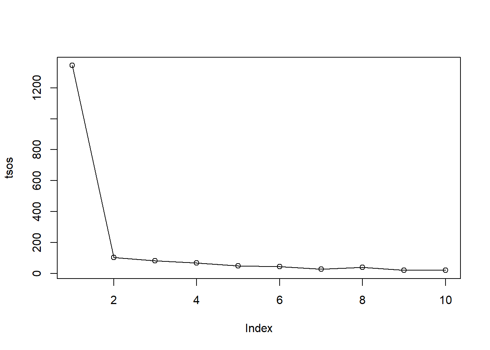
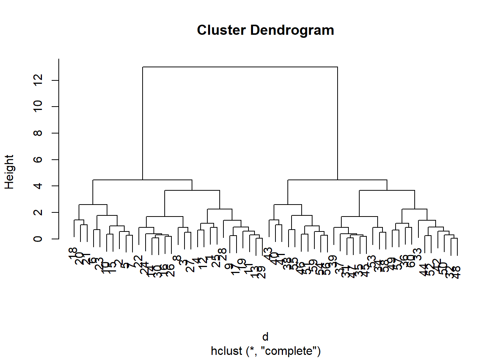
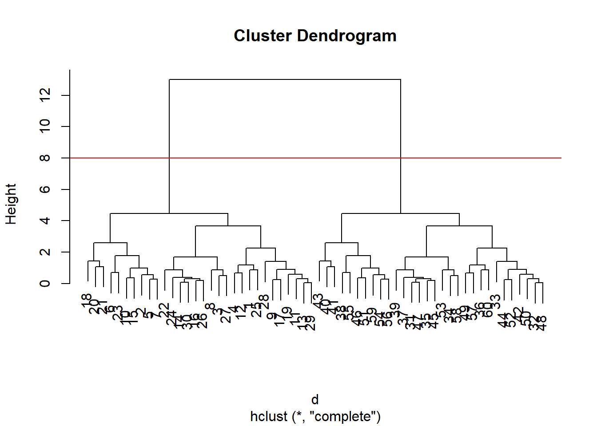
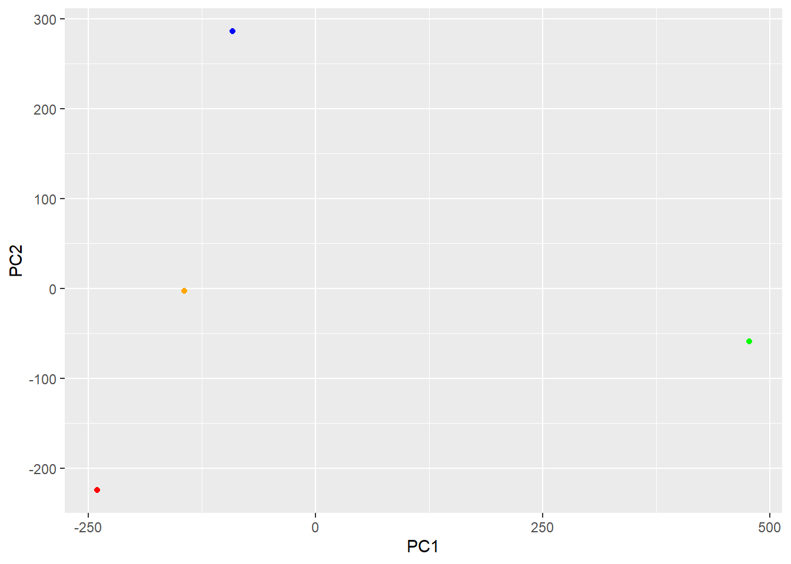
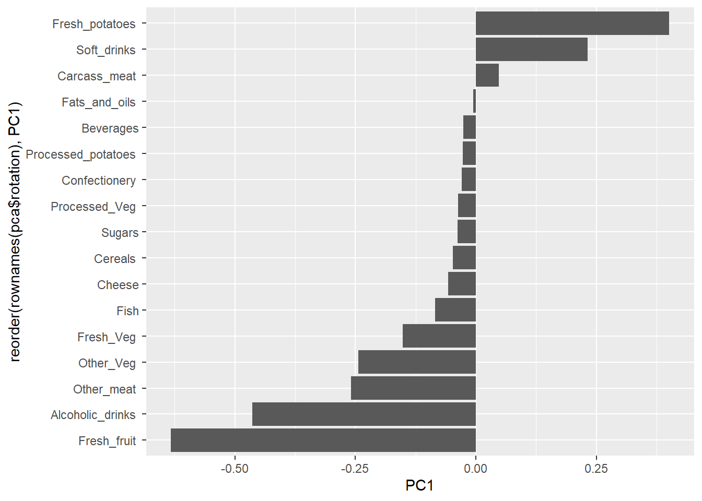
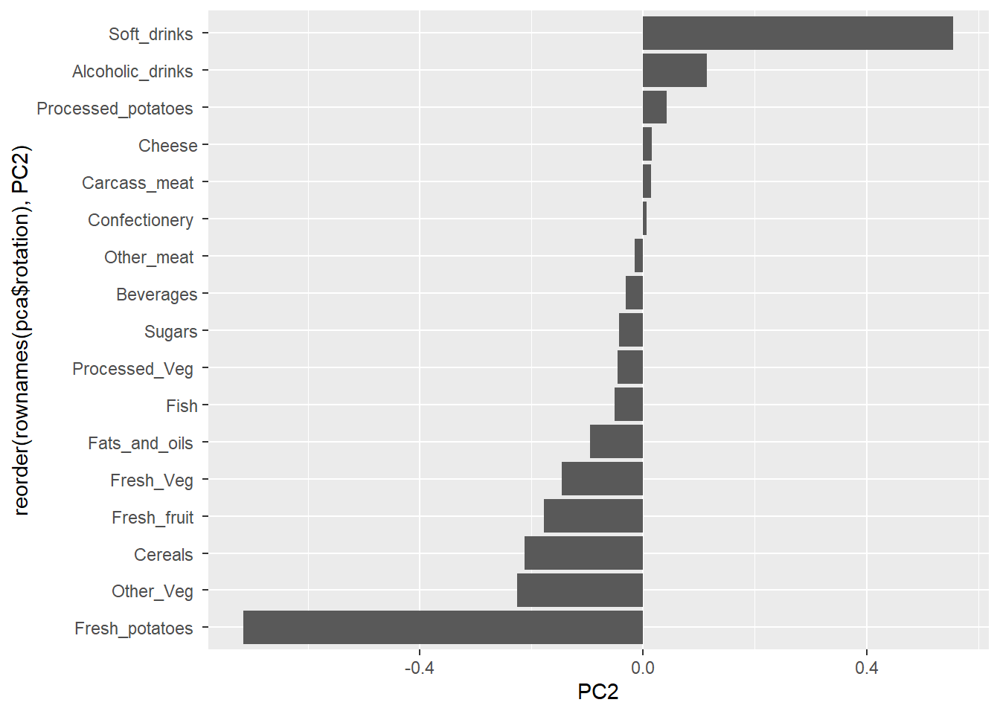

x <- rnorm(30, 3)
y <- rnorm(30, -3)
tmp <- c(x,y)
z <- cbind(tmp, rev(tmp))
plot(z)
Start the exploration of machine learning methods, namely clustering and dimensionality reduction.
Define test data for clustering with known natural “clusters”.
The function rnorm() produces a random number based on a normal distribution with parameters for the distribution. rnorm(n, mean, sd) defines the sample size and the normal distribution mean and sd.
Q. generate 30 random numberes centered at 3 and another centered at -3 and plot them
x <- rnorm(30, 3)
y <- rnorm(30, -3)
tmp <- c(x,y)
z <- cbind(tmp, rev(tmp))
plot(z)
The function kmeans() in “base R” is used for K-means clustering.
km <- kmeans(z, 2)
kmK-means clustering with 2 clusters of sizes 30, 30
Cluster means:
tmp
1 -3.180113 3.248366
2 3.248366 -3.180113
Clustering vector:
[1] 2 2 2 2 2 2 2 2 2 2 2 2 2 2 2 2 2 2 2 2 2 2 2 2 2 2 2 2 2 2 1 1 1 1 1 1 1 1
[39] 1 1 1 1 1 1 1 1 1 1 1 1 1 1 1 1 1 1 1 1 1 1
Within cluster sum of squares by cluster:
[1] 52.28511 52.28511
(between_SS / total_SS = 92.2 %)
Available components:
[1] "cluster" "centers" "totss" "withinss" "tot.withinss"
[6] "betweenss" "size" "iter" "ifault" Q. Extracting the component of the results object that details cluster size, cluster centers, and cluster membership vector
km$size[1] 30 30km$centers tmp
1 -3.180113 3.248366
2 3.248366 -3.180113km$cluster [1] 2 2 2 2 2 2 2 2 2 2 2 2 2 2 2 2 2 2 2 2 2 2 2 2 2 2 2 2 2 2 1 1 1 1 1 1 1 1
[39] 1 1 1 1 1 1 1 1 1 1 1 1 1 1 1 1 1 1 1 1 1 1Plot of clustering results with points colored by cluster and cluster centeres as new points
plot(z, col = km$cluster)
points(km$centers, col = "blue", pch = 15)
Q. Run kmeans instead with an n of 4 and create a results figure
k4 <- kmeans(z, 4)
plot(z, col = k4$cluster)
points(k4$centers, col = "blue", pch = 15)
Analyzing the total sum of squares value
km$tot.withinss[1] 104.5702k4$tot.withinss[1] 68.14735creating a scree plot for number of clusters
tsos <- NULL
for (i in 1:10){
kx <- kmeans(z, i)
tsos <- c(tsos, kx$tot.withinss)
}
tsos [1] 1344.33032 104.57023 83.30620 68.14735 50.40678 43.54833
[7] 27.71535 38.94429 21.54520 20.57782plot(tsos, type = "o")
From the plot we can identify the scree point for this data set is 2 since 2 has the largest drop off for the total sum of squares. Thus, 2 clusters is optimal for kmeans() for this data set.
N.B Determining the scree point is integral to preventing bias in data analysis since kmeans() will always impose n clusters onto the data set which leads to a potential confirmation bias. Using a scree plot helps to ensure the cluster count is actually optimal outside of human judgment.
#Hierarchical Clustering
The main function for Hierarchical Clustering is called hclust() hclust() does not take the raw data, it requires a distance matrix output by the function dist() which is a matrix of all distances between points.
d <- dist(z)
hc <- hclust(d)
plot(hc)
To extract the cluster membership vector from the hclust() function result, we have to “cut” the tree at certain heights to yield separate groups/branches.
Essentially:
plot(hc)
abline(h = 8, col = "red")
Using the cutree() function on the hclust() result we can cut the tree at height h which returns a vector for each point and their respective cluster id.
grps <- cutree(hc, h = 8)
grps [1] 1 1 1 1 1 1 1 1 1 1 1 1 1 1 1 1 1 1 1 1 1 1 1 1 1 1 1 1 1 1 2 2 2 2 2 2 2 2
[39] 2 2 2 2 2 2 2 2 2 2 2 2 2 2 2 2 2 2 2 2 2 2compared to kmeans() output:
table(grps, km$cluster)
grps 1 2
1 0 30
2 30 0PCA looks to reduce the multidimensional of the data but while only losing a small amount of information. It produces principal vectors that describe the data in lower dimensions (ex. like lines of best fit for all dimensions of the data set). From the principal vectors (eigenvectors), the distance to each point can be calculated perpendicular to the new vector to capture the variance of the data in n dimensions. By using eigenvectors for variance, it effectively rotates the axes which variance is defined which can be used to drop axes with low variance, reducing dimensions for analysis. The first principal axis contains the most variation while the subsequent axes contain the least variation.
Import the dataset for food consuption in the UK
url <- "https://tinyurl.com/UK-foods"
x <- read.csv(url)
head(x) X England Wales Scotland N.Ireland
1 Cheese 105 103 103 66
2 Carcass_meat 245 227 242 267
3 Other_meat 685 803 750 586
4 Fish 147 160 122 93
5 Fats_and_oils 193 235 184 209
6 Sugars 156 175 147 139Fixing the row names to make the rownames() the column 1 names and not a separate column manually:
rownames(x) <- x[,1]
x <- x[,-1] # negative indices removed those columns from
head(x) England Wales Scotland N.Ireland
Cheese 105 103 103 66
Carcass_meat 245 227 242 267
Other_meat 685 803 750 586
Fish 147 160 122 93
Fats_and_oils 193 235 184 209
Sugars 156 175 147 139Better method by adding the row.names argument in the read.csv() method:
x <- read.csv(url, row.names = 1)
head(x) England Wales Scotland N.Ireland
Cheese 105 103 103 66
Carcass_meat 245 227 242 267
Other_meat 685 803 750 586
Fish 147 160 122 93
Fats_and_oils 193 235 184 209
Sugars 156 175 147 139## Spotting major differences and trends
With 17 dimensions, identifying differences between each varaible is difficult:
barplot(as.matrix(x), beside=T, col=rainbow(nrow(x)))
Pairs plot plots differences betwween each condition in a matrix
pairs(x, col=rainbow(nrow(x)), pch=16)
Heat maps
library(pheatmap)Warning: package 'pheatmap' was built under R version 4.4.3pheatmap( as.matrix(x) )
The main PCA function in “base R” is the function prcomp(). for prcomp() the data input needs to be in a longer format with variables as rows and vice versa. Using the t() function we can rotate the data set to be compatable with prcomp().
pca <- prcomp(t(x))
summary(pca)Importance of components:
PC1 PC2 PC3 PC4
Standard deviation 324.1502 212.7478 73.87622 3.176e-14
Proportion of Variance 0.6744 0.2905 0.03503 0.000e+00
Cumulative Proportion 0.6744 0.9650 1.00000 1.000e+00Ordination plots (PC plots, score plots): creates a new plot along the new axes with the principal axes.
attributes(pca)$names
[1] "sdev" "rotation" "center" "scale" "x"
$class
[1] "prcomp"To make one of the main PCA result figure the value x within the pca object represents the score for each point for the plot.
Plotting PC1 to PC2 (since 96.5% of the variance is within these two vectors):
library(ggplot2)Warning: package 'ggplot2' was built under R version 4.4.3my_cols <- c("orange", "red","blue", "green")
ggplot(pca$x, aes(PC1, PC2)) +
geom_point(color = my_cols)
The second major result figure unpacks the meaning behind each principal axis called a “loadings plot” or “variable contributions plot” or “weight plot”. Plotting the relative contribution of each variable to each prinpal axis.
PC1:
ggplot(pca$rotation) +
aes(PC1, reorder(rownames(pca$rotation), PC1)) +
geom_col()
PC2
ggplot(pca$rotation) +
aes(PC2, reorder(rownames(pca$rotation), PC2)) +
geom_col()